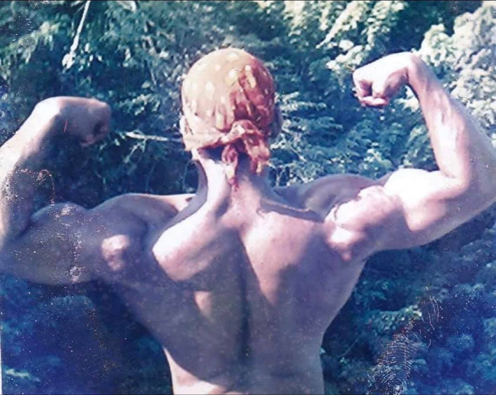

Prissco Sequeira
In 1997, a then 17-year-old Prissco Sequeira was diagnosed with a tumour in his right ankle
“We were told that they would have to cut my leg from the knee. So my dad took me to Bhatia
Hospital, Mumbai where we met a doctor who was into bone research,” he recalls. A decision was
finally taken to instead cut the bone where the tumor was.
“When the operation was done the doctor advised me that I will not be able to run or play any
outdoor sports or even lift anything heavy,” says Sequeira. He was also told that he would not be
able to walk normally.
“My full leg from hips to toe was in plaster and I was on complete bed rest for one year. With not
much else to do, I spent my time reading books and watching TV,” says Sequeira.
One day, his mom gave him an old photo album where he came across a muscular picture of his dad that
left him intrigued. “When my dad came down from the ship I asked him how he became like that and
that was the first time I heard about bodybuilding,” he says
“My dad also told me that he really liked bodybuilding and wanted to continue but because of
financial issues he had to leave and go on ship,” narrates Sequeira. His dad further expressed his
desire that somebody from the family would continue in this body building line. “And that day, even
though I was on bed rest, I promised myself that no matter what, one day I would fulfill my dad’s
dream.”
And so once he was able to walk again, Sequeira first began to work out on his own. “But, I soon
realised that I needed a gym and a fitness instructor if I wanted to fulfill my dream,” he says.
Sequeira thus began inquiring about gyms and also met with some bodybuilders who were competing for
state or national level to ask if they could help him train. “But they all made fun of me since I
looked handicapped. My right leg was just the bone and the other leg had put on some weight,” he
says. “Whenever I used to enter the gym they would tease me and say: ‘Here comes the bodybuilder’.”
After a few months, a demotivated Sequeira left that gym and joined another. It was here that he met
Pascoal Noronha who later became his coach and guru.
“He used to look at me in a strange way when I first began coming to the gym and one day he came up
to me and asked if I was really interested in bodybuilding,” states Sequeira. Upon replying in the
affirmative, Noronha then spoke to Sequeira’s dad and from that day on he began his training.
Under him, Sequeira began participating in bodybuilding competitions in 2001. He won his first title
of Mr Goa in 2001 and from then on he went on to win many more titles.
As Sequeira began working on the ship too, he would participate in competitions during his time off
in the state. But in 2009, when he was supposed to participate in a competition, he had a major
accident. As he was recuperating, a sudden realisation set in. That he survived for a purpose- to
dedicate his life to fitness.
“I left my job on the ship and decided to set up a gym in my village to train budding bodybuilders,”
he says.
Today, Sequeira is a certified personal trainer who owns ABS Fitness Zone Gym (named after his
parents – Armando and Bella) at Chichinim. With 30 years experience in fitness, his aim is to train
interested youth in the most natural way without letting trainees consume harmful products. He
emphasises that every physique is different and so workout and diet has to be customised. In this
respect, he keeps researching and updating his knowledge.
“Fitness has helped me to be mentally strong and has given me an opportunity to change the lives of
several people,” Sequeira tells us.
His wife Elena, a Zumba-certified trainer, supports her husband and together the duo has been making
fitness enthusiasts work out to achieve results.
